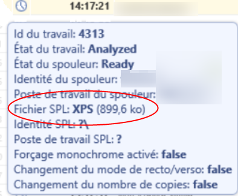
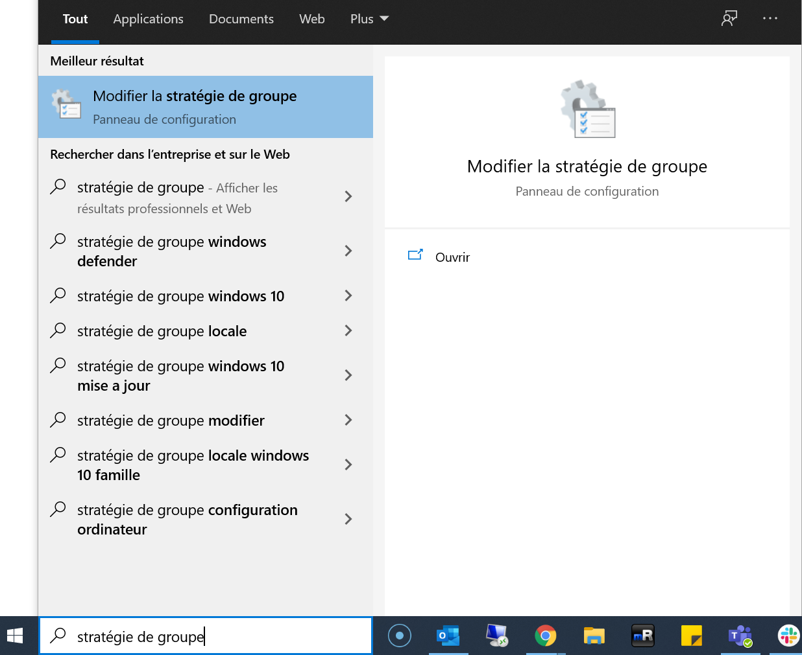
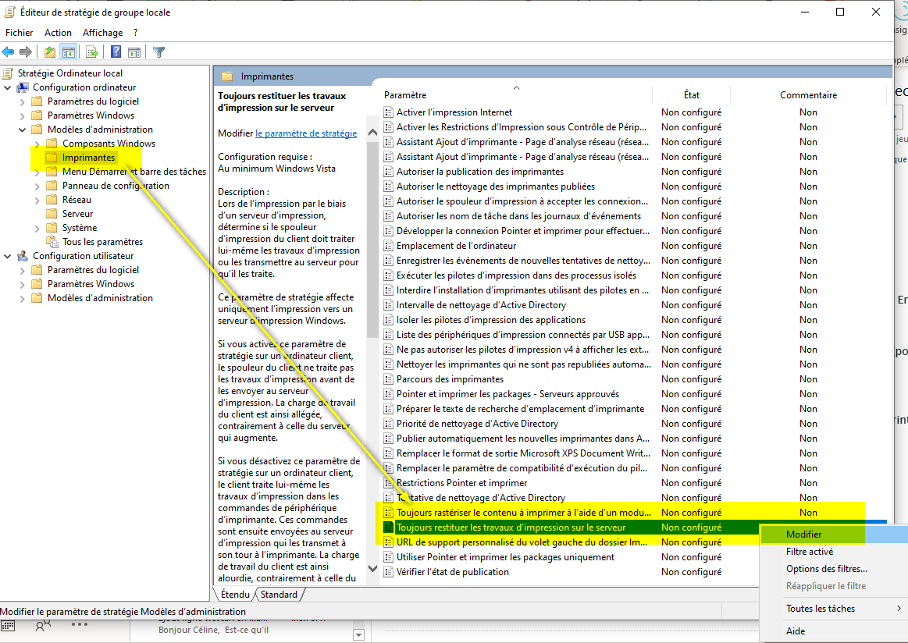
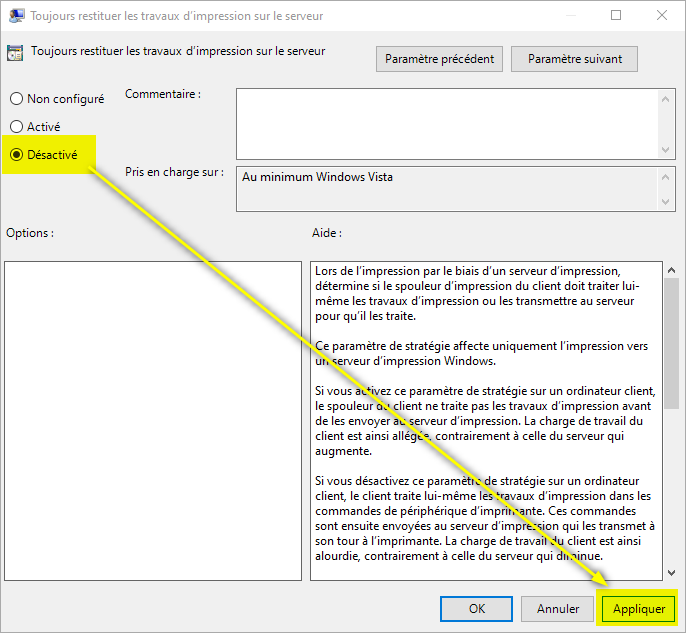

Problèmes de spool au format XPS - Format invalide
Principe
Cependant, compte-tenu des limitations que pose ce format sur certaines fonctionnalités (transformation de spools et impression à la demande interserveur notamment), nous en déconseillons l'utilisation.
Un document XPS est un fichier enregistré au format XML Paper Specification. Bien que vous puissiez créer un fichier XPS grâce à n'importe quel programme d'impression dans Windows, vous devez disposer d'un logiciel spécifique comme la visionneuse XPS pour afficher ou modifier ces fichiers.
Lorsque vous ouvrez un document XPS, la visionneuse XPS ouvre automatiquement ce document dans une fenêtre Internet Explorer. Deux barres d'outils supplémentaires apparaissent : l'une au-dessus et l'autre en dessous du document XPS. Chacune de ces barres propose des options d'affichage et de gestion de documents XPS.
Contexte
Lorsque des travaux d'impression sont demandés à partir d'applications natives de MS Windows 10 (telles que Edge, Photo, paint, etc.), il arrive que les symptômes suivants surviennent :
-
la ou les files d'attente se retrouvent bloquées par un travail d'impression
-
le spooler MS Windows dysfonctionne
-
l'impression finale ne correspond pas au travail d'impression demandé
-
le travail n'apparait pas dans la liste des travaux en attente du WES
-
les options de finitions sont manquantes
-
la transformation de spools ne fonctionne pas
-
l'impression interserveur ne fonctionne pas (uniquement PCL-XL)
-
le message d'erreur suivant apparait sur les MFP : "Format du fichier invalide : veuillez réimprimer le document".
-
des travaux au format XPS sont affichés dans les historiques

Causes
Ce problème peut être dû à Watchdoc qui ne gère pas la transformation de spool pour des impressions "non-RAW" et que des spools au format XPS sont générés automatiquement par certaines applications natives de Windows 10 (Edge, photo, etc...). Dans ce cas, suivez les étapes de résolution suivantes.
N.B. : l'utilisation de Watchdoc nécessite le paramétrage de certaines exclusions (notamment sur le dossier Watchdoc et sur les dossiers spooler Windows et spooler Doxense) dans Windows Defender®.
Ces exclusions sont normalement paramétrées automatiquement lors de l'installation de Watchdoc, mais il arrive parfois qu'une gestion manuelle de ces droits ou une une réinitialisation de ces droits dans Windows Defender® (notamment après une mise à jour) modifie ce paramétrage initial. Vérifiez la configuration des droits dans Microsoft Defender®.
Résolution
Il convient :
-
de vérifier que le mode CSR (Client Side Rendering
 Client Side Rendering. Dans une infrastructure Client/serveur, le Client-side rendering est la prise en charge du spool par le poste client et non par le serveur. Le poste client envoie donc au serveur un fichier de spool finalisé. ) est bien activé sur le périphérique (cf. Créer et configurer une file) ;
Client Side Rendering. Dans une infrastructure Client/serveur, le Client-side rendering est la prise en charge du spool par le poste client et non par le serveur. Le poste client envoie donc au serveur un fichier de spool finalisé. ) est bien activé sur le périphérique (cf. Créer et configurer une file) ; -
d'activer le CSR sur les postes de travail.
Si le problème survient alors que le CSR est activé (notamment sur les portables), il convient de forcer cette activation.
Sur les postes de travail fixes
Configurez la stratégie suivante sur le poste client (applicable aussi par GPO) pour obliger les postes clients à soumettre les spools au format RAW.
-
Accédez au poste en tant qu'administrateur.
-
dans l'outil Computer Configuration > Administrative Templates > Printers > Always render print jobs on server
-
Depuis la barre de recherche MS Windows, recherchez l'outil permettant de modifier la stratégie locale :

-
Dans l'Editeur de stratégie de groupe locale, cliquez sur Configuration ordinateur > Modèles d'administration > Imprimantes.
-
Dans la liste des Paramètres, sélectionnez "Toujours restituer les travaux d'impression sur le serveur".
-
Cliquez droit pour accéder au menu Modifier :

-
Dans l'interface du paramètre "Toujours restituer les travaux d'impression sur le serveur", cochez Désactivé, puis cliquez sur Appliquer > OK :

-
Sur le poste client, supprimez et recréez la file réseau.
-
Redémarrez le poste client avant de relancer l'impression.
-
Vérifiez que le message d'erreur ne s'affiche plus et que document a bien été imprimé.
Sur les postes de travail portables
-
Accédez au serveur d'impression en tant qu'administrateur ;
-
en Powershell, lancez la commande suivante : Set-Printer -Name <PrinterName> -RenderingMode CSR ; (où PrinterName = file virtuelle partagée) ;
-
sur chaque poste de travail, supprimez et recréez la file (virtuelle partagée) réseau.